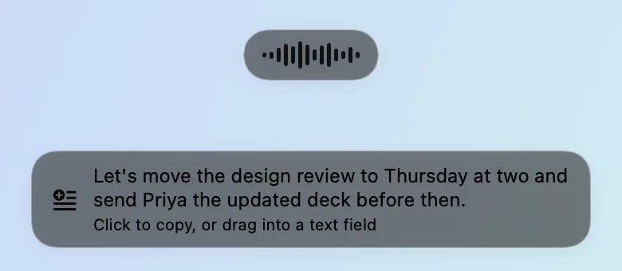

Voice Notes
Dictation and meeting notes in one Mac menu-bar app. Private, and on your device.
Replaces your dictation and meeting-notes apps.

Dictation
Hold fn. Talk. It types.
Works in any text field, in any app. Let go, and your words land at the cursor, with filler removed and punctuation in place.


On-device speech
Fast, accurate, and local.
Speech recognition runs on your Mac with Parakeet. Nothing is uploaded, and there is no server to wait on. Text usually appears about half a second after you let go.

Meetings
Meeting notes, with no bot in the call.
Press record and Voice Notes captures both sides of the conversation, the call audio and your microphone, right on your Mac. Nothing joins the call but you.
Who said what
Transcripts are split by speaker, so you can scan back to the moment that mattered.
Notes that write themselves
A summary, decisions, and action items, each linked to the point in the call it came from.
Knows your calendar
Your next meeting sits in the menu bar. One click records it, already named.
Snapshots
The slides, in your notes.
When someone shares their screen, Voice Notes keeps a picture of each new slide and places it next to the point it supports. Your notes read like the meeting looked.

Insights
See how you use your voice.
Words dictated, speaking pace, time saved, and the apps you talk to most. Counted on your Mac, for your eyes only.

Privacy
Your voice stays yours.
You speak
Hold fn to dictate, or press record for a meeting.
Your Mac listens
Audio is transcribed on your Mac. It never goes to a server.
Text lands
In the app you were typing in, or in your meeting library.
Recordings stay put
Audio, transcripts, and notes are kept in a folder on your Mac. Delete a meeting and it is gone.
Cloud is opt-in
Want a cloud model for cleanup? Add your own key. Until you do, nothing leaves your Mac.
Quiet logs
Diagnostics record counts and timings, never what you said.